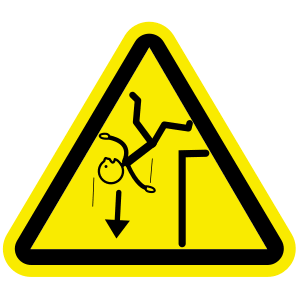
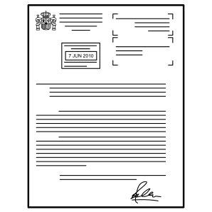

Thématique C · 1re Bac Pro
Fiche de révision C5 — L’analyse des risques professionnels
Révise en t'amusant, écoute, puis imprime ta fiche
Fais défiler la page : les notions apparaissent une à une. Touche les cartes pour les retourner, touche 🔊 Écouter pour entendre une carte, une question ou une correction, puis réponds aux questions « Je vérifie mes acquis ».
1. Décrire une activité : l'ITaMaMi
Touche chaque carte pour voir la question de la composante.
2. Les familles de risques
L'INRS classe les risques en familles. Exemples : chute de plain-pied, chute de hauteur, circulations internes de véhicules, charge physique de travail, équipements de travail, bruit, électricité, risques psychosociaux. D'après l'INRS, ED 840, octobre 2023.

Chute de hauteurOn tombe d'un niveau plus haut : escabeau, échelle, étagère. Chute de plain-piedOn tombe au même niveau : on trébuche ou on glisse, par exemple sur un carton au sol.
Chute de plain-piedOn tombe au même niveau : on trébuche ou on glisse, par exemple sur un carton au sol.3. Du danger au dommage : le PAD
Touche chaque carte, dans l'ordre du processus.
Le risque professionnel est la possibilité qu'un travailleur exposé à un danger subisse un dommage. L'exposition peut être ponctuelle ou prolongée (INRS).
4. Évaluer : gravité et probabilité
La gravité1 faible : sans arrêt de travail. 2 moyen : avec arrêt. 3 grave : incapacité permanente. 4 très grave : décès.
La probabilité d'occurrenceSelon la fréquence d'exposition et la probabilité de l'événement déclencheur : de 1 (rare et faible) à 4 (fréquente et élevée).
5. Le niveau de priorité
Priorité 1Réduction du risque nécessaire et immédiate.
Priorité 2Réduction nécessaire, mais non immédiate.
Priorité 3Réduction non nécessaire.
Le niveau de priorité croise la gravité et la probabilité. Chute de hauteur depuis l'escabeau : gravité 3, probabilité 4 → priorité 1. Chute dans le couloir : gravité 2, probabilité 4 → priorité 2.
6. Les principes généraux de prévention
Le Code du travail (article L. 4121-2) donne neuf principes, de « 1° Éviter les risques » à « 9° Donner les instructions appropriées aux travailleurs ».
7. Protection collective, individuelle, formation
Protection collectiveElle protège le salarié au poste et les autres personnes présentes. Elle est prioritaire. Exemple : une plateforme individuelle roulante avec garde-corps à la place de l'escabeau.
 Protection individuelleUn équipement porté ou tenu par une personne (EPI), en complément. Exemple : des chaussures à semelle antidérapante.
Protection individuelleUn équipement porté ou tenu par une personne (EPI), en complément. Exemple : des chaussures à semelle antidérapante. FormationElle accompagne toutes les mesures. Exemple : la formation-action Prap (prévention des risques liés à l'activité physique).
FormationElle accompagne toutes les mesures. Exemple : la formation-action Prap (prévention des risques liés à l'activité physique).8. Le document unique (DUERP)

Le DUERPLe document unique d'évaluation des risques professionnels répertorie l'ensemble des risques auxquels sont exposés les travailleurs. Il sert à définir les actions de prévention.Exemple de ligne : Archives (sous-sol) · Chute de hauteur depuis l'escabeau · Priorité 1 · Plateforme individuelle roulante avec garde-corps. D'après le Code du travail, articles L. 4121-3-1 et R. 4121-2.
Je vérifie mes acquis : 0 / 0